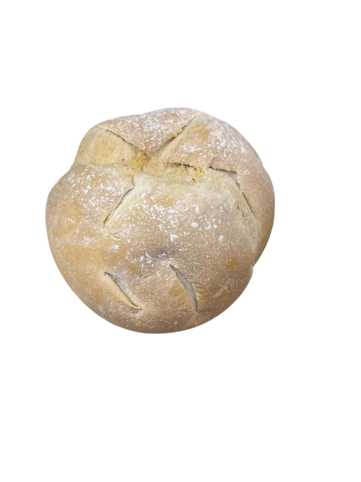

NUESTRA HISTORIA Y VALORES
Conócenos de cerca
El verdadero sabor del pan artesanal se construye con tiempo, paciencia y amor.

Más que una panadería, un lugar de encuentro
Desde nuestros inicios, hemos cultivado más que masa madre: cultivamos vínculos con nuestra comunidad. Creemos en el amor por el pan bien hecho, en ingredientes frescos y naturales, y en respetar los tiempos de fermentación que cada receta merece.
Cada pieza que sale de nuestro horno lleva el cuidado de manos expertas y la pasión de generaciones dedicadas al arte de la panadería. Porque sabemos que el verdadero sabor se construye con tiempo, paciencia y amor.
FILOSOFÍA DE TRABAJO
Lo que nos hace únicos
Harinas Seleccionadas
Utilizamos granos de primera calidad sin aditivos artificiales para lograr cortezas crujientes y migas esponjosas.
Fermentación Lenta
Respetamos los tiempos naturales de levado para obtener panes de fácil digestión, aromas profundos y gran durabilidad.
Maestros Artesanos
El toque humano en cada moldeado, trenzado y horneado garantiza piezas únicas con alma y sabor casero.
¿Listo para probar nuestro pan recién salido del horno?
Descubre toda nuestra vitrina de productos o contáctanos para visitarnos.